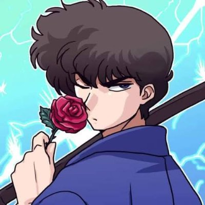

⚔️ Tatewaki Kuno

Tatewaki Kuno es un estudiante noble y experto en kendo.
🌀 Personalidad
Es arrogante y cree ser el mejor guerrero. Está enamorado de Akane y de la versión femenina de Ranma.
❤️ Relaciones
- Akane Tendo: Su gran amor.
- Ranma Saotome: Su mayor rival y su otro gran amor en versión mujer.
🔠Curiosidades
- Siempre habla de forma poética.
- No entiende que Ranma y la pelirroja son la misma persona.
🔊 Escucha su voz
🔙 Volver a la lista de personajes